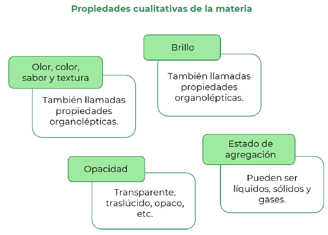

En esta sesión abordarás las características de los materiales, como son las propiedades físicas tanto intensivas como extensivas. Además, reconocerás la estructura interna de la materia, la disposición y el arreglo de sus átomos y moléculas para su clasificación en sustancias puras y mezclas.
Propiedades físicas de la materia
 Identificarás las propiedades físicas de la materia
Identificarás las propiedades físicas de la materia
 Lee el siguiente texto, el cual te permitirá recordar las características químicas y
físicas que componen y describen la materia.
Lee el siguiente texto, el cual te permitirá recordar las características químicas y
físicas que componen y describen la materia.
Materia es todo aquello que tiene una masa, ocupa un lugar en el espacio y se convierte en energía. Sus propiedades se clasifican en:

No siempre podemos recurrir solamente a nuestros sentidos para reconocer las propiedades de los materiales; por ejemplo, si tomas café o té puedes afirmar que está frío o caliente y para otra persona puede no parecerle igual, aunque es relevante esta información no es tan importante como cuando se trata de conocer con exactitud tu temperatura corporal para saber si estás enfermo.